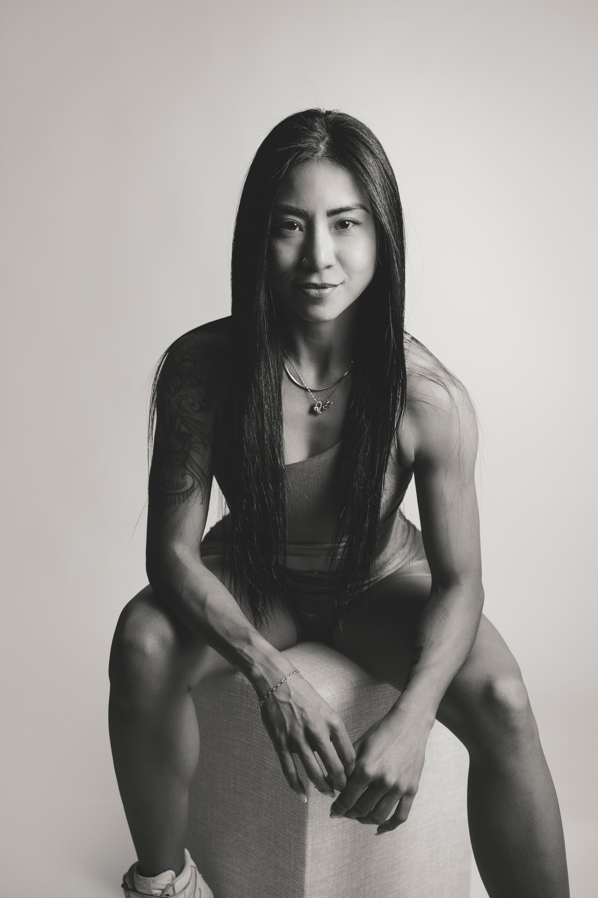
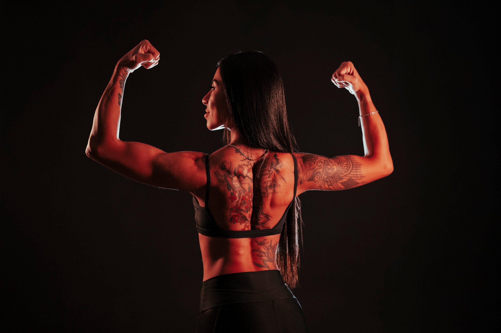
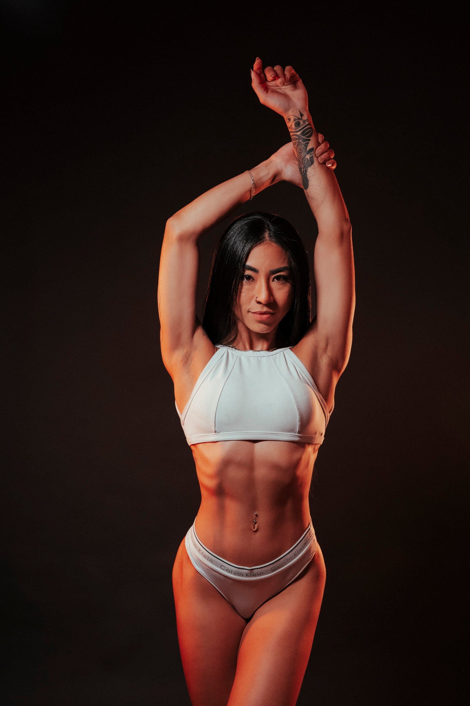
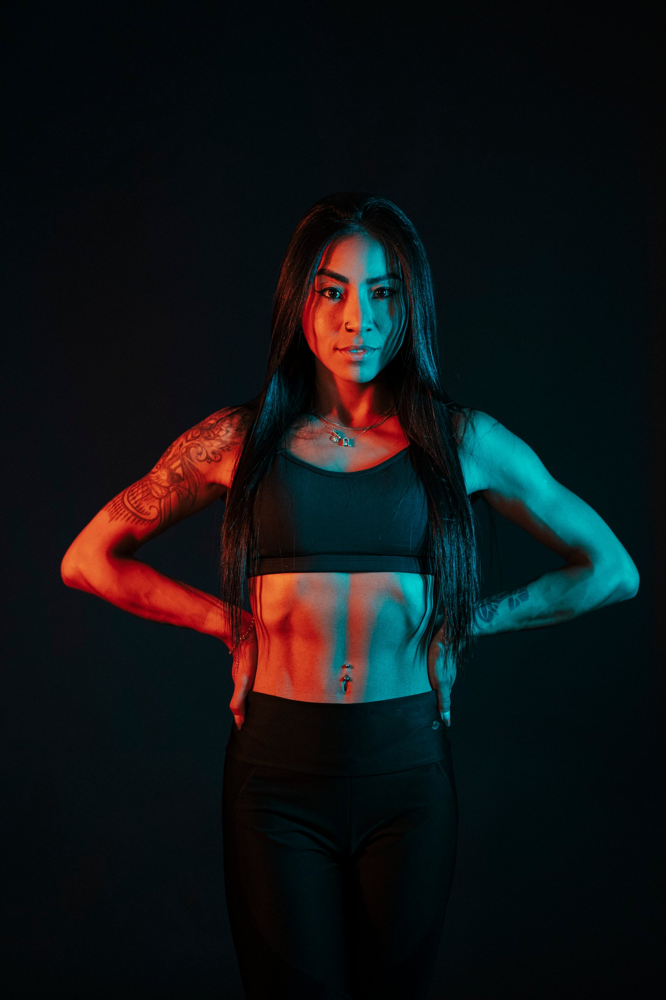
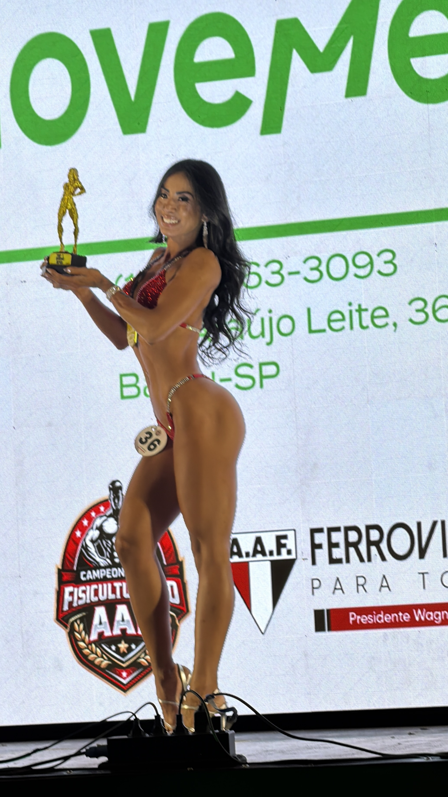
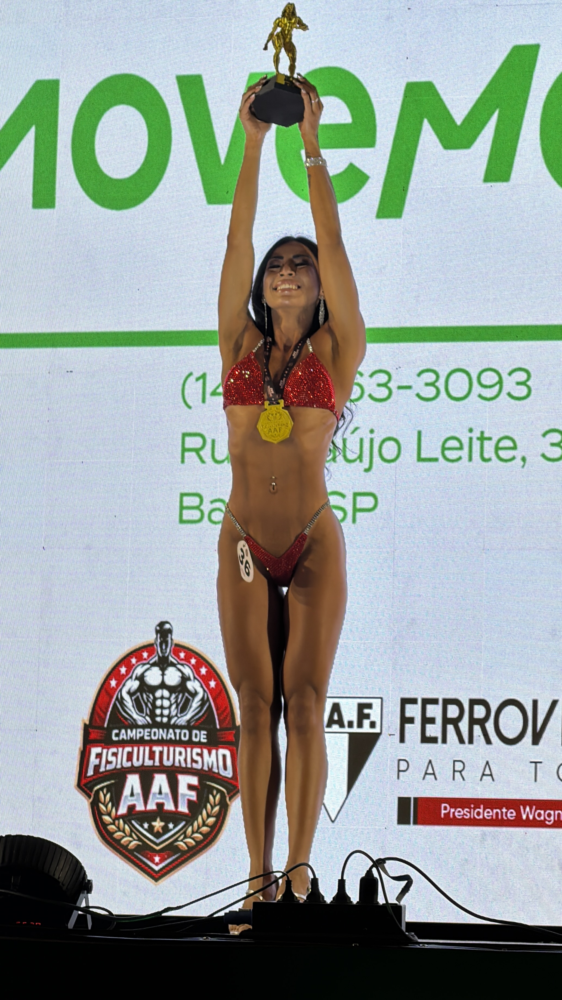
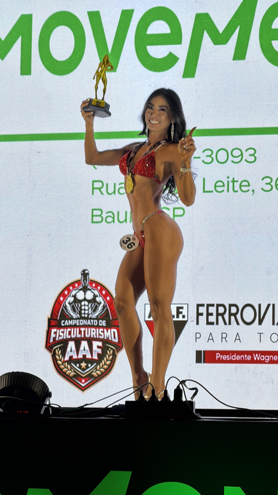

Sobre mim
Flávia Mayumi
Treinadora, atleta e apaixonada por ver pessoas evoluírem um passo de cada vez.

MinhaHistória
O esporte faz parte da minha vida desde a infância, e a musculação, há 17 anos. Foi esse contato tão cedo que me fez tomar gosto pelo esporte e despertou o meu interesse em trabalhar com a Educação Física.
Comecei a atuar como treinadora há 11 anos, ainda na faculdade, estagiando em musculação desde o 2º semestre. Sou formada em Educação Física desde 2021 e tenho registro profissional no CREF 036688-G/PR. Também sou formada em Design de Interiores, e talvez venha daí o meu lado criativo.
Sou atleta de fisiculturismo: vivo na prática a disciplina, a constância e a paciência que ensino aos meus alunos.
Acredito que cada pessoa possui uma trajetória única e merece um acompanhamento individualizado, baseado em ciência, estratégia e respeito à individualidade de cada aluno.
MinhaTrajetória
- 2009
Começo na musculação
O treino entra na minha vida e nunca mais sai.
- 2015
Primeiros passos como treinadora
Estágio em musculação desde o 2º semestre da faculdade.
- 2021
Formada em Educação Física
Formação que dá base técnica a tudo o que faço.
- Hoje
Consultoria Kaisen
Treino, alimentação e acompanhamento online, lado a lado com cada aluno.
Formação eCursos
Estudo constante para oferecer o melhor para cada aluno.
Educação Física
Graduação · 2021 · CREF 036688-G/PR
Atleta deFisiculturismo
No palco, a mesma filosofia que levo para os alunos: uma vitória por dia.






Kaisen 改善
A evolução não acontece em um único dia.Ela acontece todos os dias.
Você não precisa transformar tudo de uma vez. Precisa apenas começar.
Um treino de cada vez.
Uma escolha de cada vez.
Um passo de cada vez.
O método Kaisen existe para transformar pequenas melhorias em grandes mudanças. E, dessa vez, você não precisa caminhar sozinho.
Seu próximo passo
Comece sua jornada